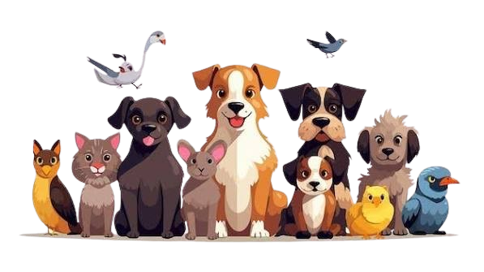

Rescate responsable
Cada perro recibe atención veterinaria completa, vacunas y cuidados antes de ser dado en adopción.
Conoce perritos rescatados, solicita una adopción y acompaña su historia.

Cada perro recibe atención veterinaria completa, vacunas y cuidados antes de ser dado en adopción.
Acompañamos todo el proceso y hacemos visitas domiciliarias para garantizar un hogar adecuado.
Mantenemos contacto con las familias adoptantes para asegurar el bienestar de cada perro.

Beagle
Juguetona y cariñosa. Ama los paseos y se lleva bien con niños y otros perros.
Más Info
Pit Bull
Leal y protector. A pesar de su pasado difícil, es un perro muy dulce y tranquilo.
Más Info
Terrier Mix
Curiosa y enérgica. Aprende trucos rápidamente y llena de alegría cualquier hogar.
Más Info
Mestizo
Calmo y obediente. Perfecto para familias que buscan un compañero tranquilo.
Más Info